In the blog post Post not found: cypress-data-session I have introduced the cypress-data-session plugin. In this blog post I will show how to use this plugin to speed up creating a user during the test, and how to instantly log in the user by caching the session cookie.
- Utilities
- The first test
- Deleting all users
- Conditional creation
- Restarting the spec
- Session data session
- Dependent data sessions
- Validation
🎁 You can find the source code for this post in the repo bahmutov/chat.io.
Utilities
First, let's introduce two utility functions for creating a new user and for logging in.
1 | /** |
Note that registerUser assumes the user with the given username does not exist yet. Now let's right our first test.
The first test
The first test assumes a clean slate.
1 | it('registers and logs in via UI', () => { |
It works
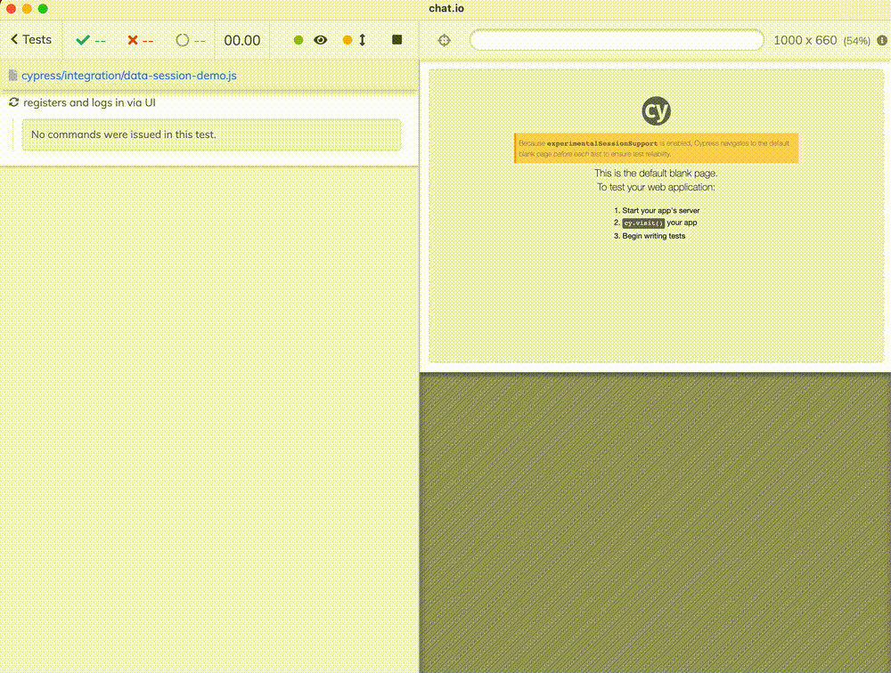
The test unfortunately fails when we try to re-run it with the error "Username already exists"
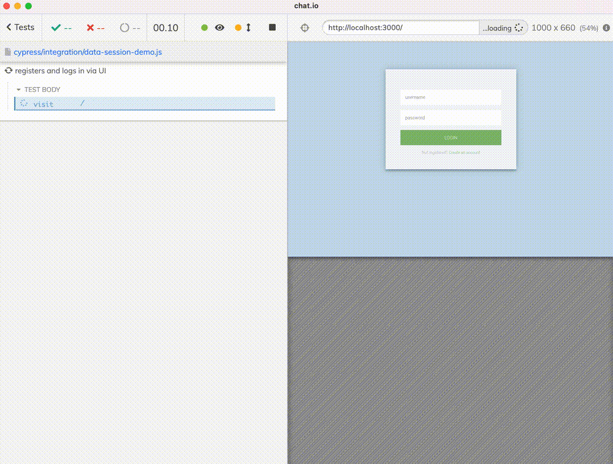
Ok, so we need to delete the user, or clear all users, or use a random username for every test.
Deleting all users
We can update the test to delete the users before registration
1 | it('deletes all users before registering', () => { |
The task clearUsers is registered in the cypress/plugins/index.js file and uses the application's database code to perform its task.
1 | const database = require('../../app/database') |
🎓 You can clear the users yourself from the browser's DevTools console by calling the task:
Great, but now every test takes six seconds - and this is our little application. What if we needed to set something else? Or if there are external systems involved that slow the user object creation? Do we want to wait 30 seconds just to start each test?
Conditional creation
We probably want to create the user if it does not exist yet. Good, how do we do that? By using cypress-data-session - just move the registerUser command into the cy.dataSession callback setup.
1 | it('cache the created user', () => { |
The first time the test runs, there is no data session with the name "user", thus it executes the setup callback with our command to register the user.
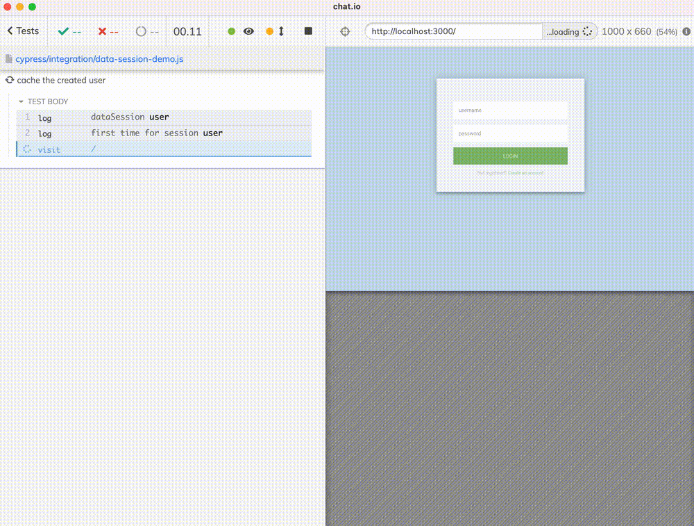
The test looks exactly like our very first attempt, but with an extra message at the top of cy.dataSession
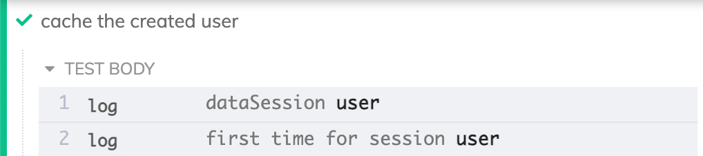
Let's run the test again.
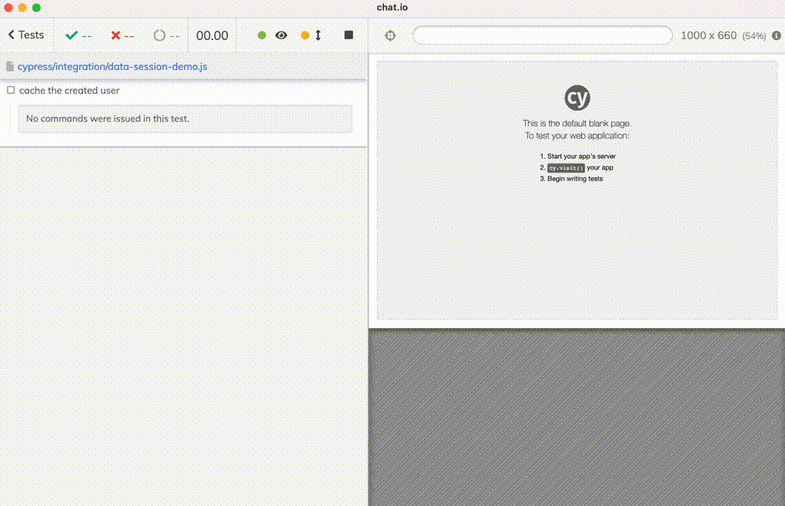
Notice the test became faster - it skipped creating the user steps completely. At the start of the data session, it found something in its memory, it was valid (thanks to the validate: true parameter!), and it skipped running registerUser function.
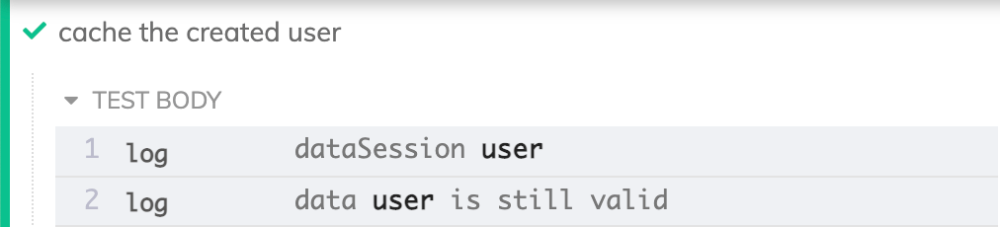
Super. We can even see what was cached in memory under the session name "user" by running from the DevTools console Cypress.getDataSession('user') - this static method is added to the global Cypress object by the cypress-data-session plugin.
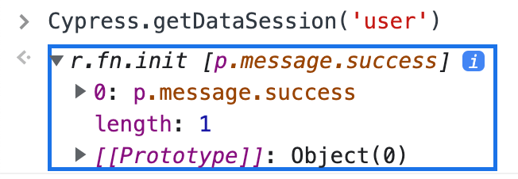
The data session stores whatever is yielded by the last Cypress command inside the setup callback. In our case, it was the DOM element cy.contains('.success', 'Your account has been created'). It works in our case, in the future example we will store something more meaningful like the user session cookie.
Restarting the spec
What happens if we hard-reload the spec file? Or close and open the Cypress? We will have no data sessions, but the user is already in the database. This will break our test, as we will try to create the user to store in the data session, hitting the "Username already exists" error. This is where the init callback is used.
1 | cy.dataSession({ |
The first time cy.dataSession runs and does not find the "user" session, it first runs the init callback. If it yields something, and that value passes the validation (thanks again to validate: true property), our code skips the setup and stores the value in memory. Now we have the data session ready to go, initialized with the already existing user.
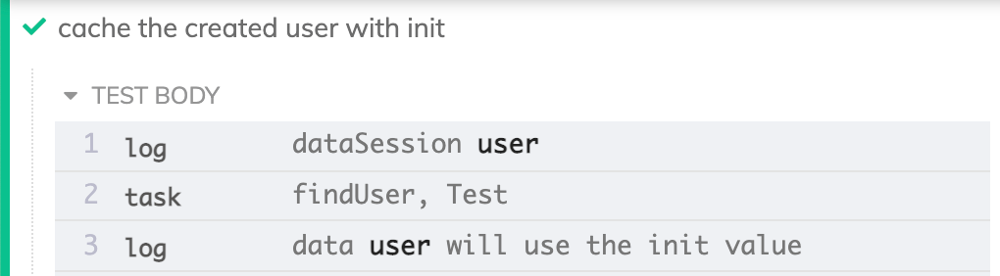
The task findUser is implemented in the plugin file using the database access code, just like clearUsers is.
1 | const database = require('../../app/database') |
Session data session
What about logging in the user? Do we always have to go through the page and submit the form? How does the browser "know" that the user is logged in? Look at the DevTools - in our case, the /login form submission, if the user supplies valid username and password, the server sets the session cookie called connect.sid.
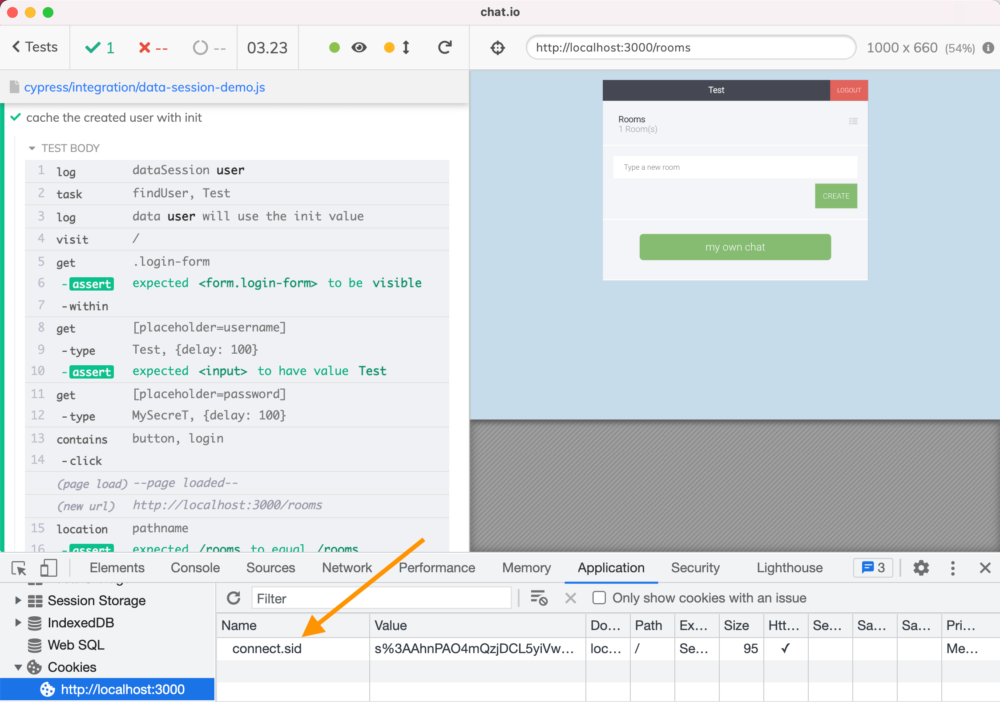
Ok, let's use cy.dataSession. If we have nothing in memory, our setup should do what we have done already - call the loginUser function. The browser will finish with the logged in user - and that's when we grab the cookie and cy.dataSession will store it in memory for us.
1 | cy.dataSession({ |
Great, but what about the second run? We have the cookie value stored in memory inside the data session "logged in", but the browser is on the blank page. How do we use the cookie? By setting it ourselves using the cy.setCookie before visiting the page. And we set the cookie and visit the page in the recreate callback - this function every time the cy.dataSession has valid item in memory.
1 | cy.dataSession({ |
Beautiful - and fast too. Look at the execution timing when we have the cookie already in memory, we completely skip the slow parts of the test.
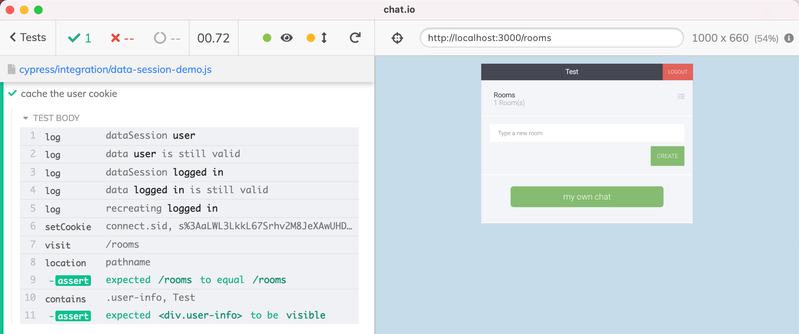
We can inspect the cookie stored in the data session memory.
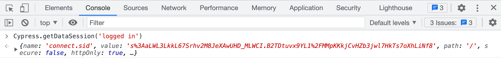
Dependent data sessions
We have two data sessions: "user" and "logged in". We storing the user "object" which is not really an object, and the cookie. What if the user object is deleted from the database? Then the test can no longer log in using the cached cookie - because that cookie does not belong to a valid user any more, and the backend check will reject it. Thus the data session "logged in" depends on the data session "user". If the data session "user" is recomputed for whatever reason, the user needs to be logged in again. This can be done automatically by explicitly listing the dependency between the two data sessions.
1 | cy.dataSession({ |
Under the hood, the cy.dataSession command keeps the timestamp when the data session called setup function. Thus it can tell if the parent session was recomputed, which invalidates the current data session.
Validation
We skipped over the validation logic, instead using the validate: true in our test. Whenever there is something in the data session memory, we assumed it was valid. This is incorrect, we should validate the user object, and we should check if the session is still valid.
Here is how we validate the user object - we yield it from the init and setup and it will be stored
1 | cy.dataSession({ |
We can see the object yielded by cy.task('findUser') stored in memory
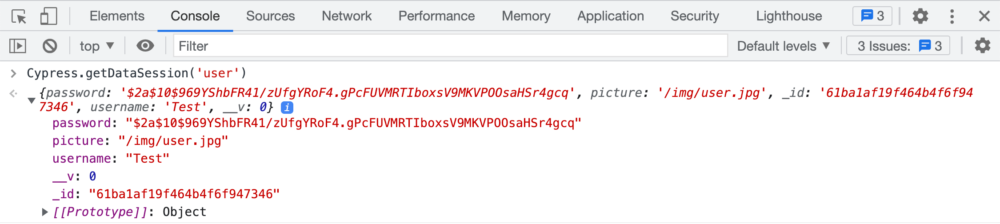
Our validate callback will receive the object from memory, and it needs to make sure there is still a user with this username, and the IDs match. Then we know the user is still good to use.
Let's validate the session cookie to prevent the tests failing if the session is very short or there was some backend session purge. Let's use cy.request to verify the cookie - by trying to request a protected resource.
1 | cy.dataSession({ |

Beautiful and fast.